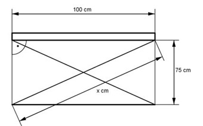

Pythagoras Aufgabe 17 Berechnen Sie von dem Klapptisch die Streben- länge x in cm.  x2 = 752 cm2 + 1002 cm2 = 15 625 cm2 |√ x = 15 625cm2 = 125 cm
Pythagoras Aufgabe 17 Berechnen Sie von dem Klapptisch die Streben- länge x in cm.
